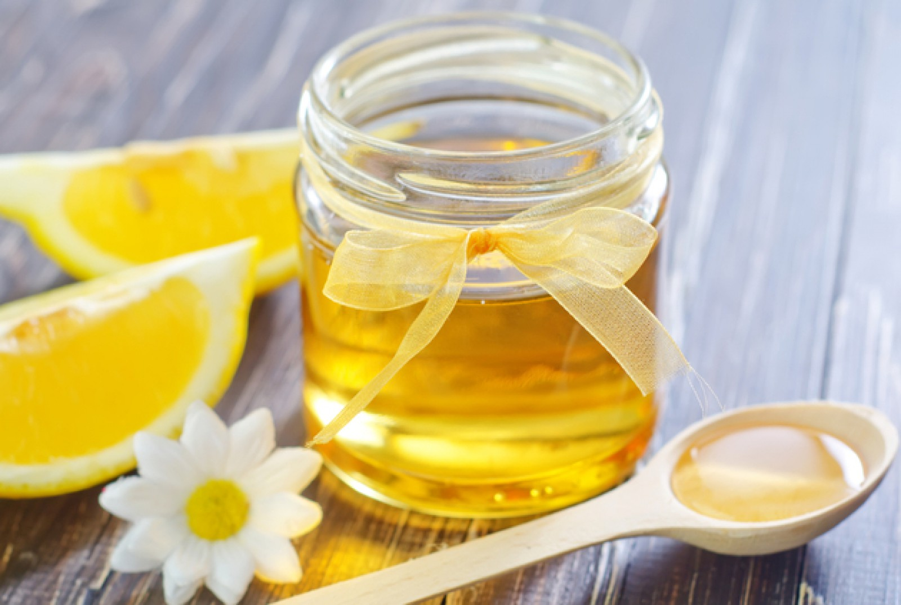
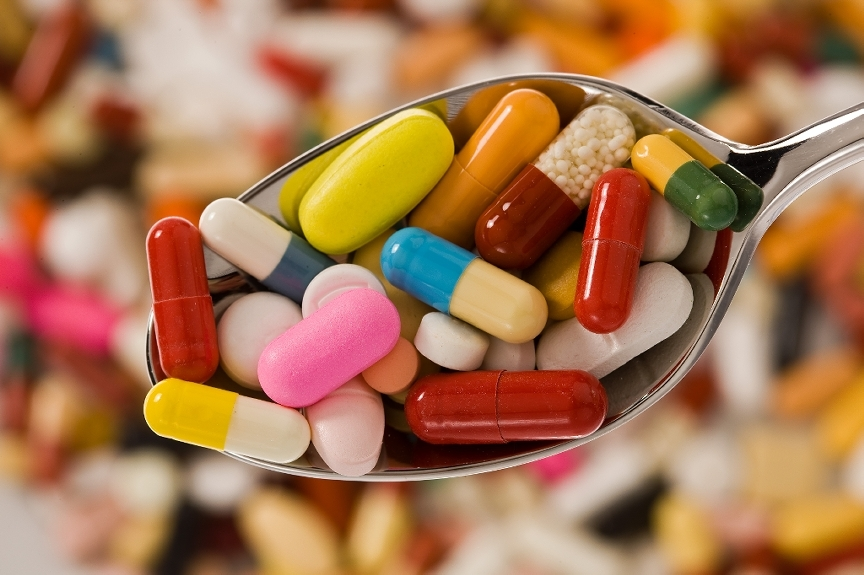

Ova mješavina se preporučuje za konzumaciju kod ljudi koji se bore sa bakterijama i virusima. Sjajna je za ojačanje imunog sistema. Mješavina ima idealne osobine zahvaljujući svojim super-snažnim sastojcima – medu i kurkumi. Mješavina je dobila epitet “zlatna”, jer joj ova dva sastojka daju baš tu boju.. Med je dobro poznat kao jedan od najboljih prirodnih lijekova. Isto to se može reći i za kurkumu. Kada se ova dva sastojka kombinuju, oni imaju antiinflamatorne, antibakterijske i antikancerogene osobine. Ova mješavina nema nikakve nuspojave. Ona ima mogućnost poboljšanja crijevne flore i cjelokupnog procesa varenja.

Hroničan bol može da poremeti život. Utiče kako na fizičko, tako i na psihičko stanje. Može da utiče i na odnos s kolegama, djecom i partnerom.
Prema izvještajima Medicinskog univerziteta na Harvardu, najčešći razlog za posjetu ljekaru je traženje lijekova protiv bolova. Saznajte šta treba da učinite.
Ne postavljajte sami dijagnozu
Provjerite šta tačno izaziva bol jer se svaki lijek bori protiv konkretne bolesti. Zato nemojte da sležete ramenima i mislite da se radi o istegnutom mišiću. Bol može da bude izazvan oštećenim živcem ili može biti nešto mnogo ozbiljnije – slijepo crijevo ili srčani udar. Laura Feris, ljekarka s Univeriteta u Pitsburgu, upozorava: “Idite kod ljekara ako se bol pojavi iznenada i niste je prije osjetili. Takvu vrstu bola svakako treba provjeriti.”
Ne čekajte nego potražite pomoć
Ako osjetite da se bol pojačava, potražite ljekarsku pomoć. “Ne dopustite da bol eskalira. Što prije krenete s liječenjem, lakše ćete bolest držati pod kontrolom”, savjetuje anesteziolog Edna Ma.
Uzimate lijekove protiv bolova bez recepta
Dobro proučite sastojke i pazite da ne prekoračite preporučenu dozu jer to može imati ozbiljne posljedice. Lekar Trejs D. Bal upozorava: “Često sam se susretao sa slučajevima da su ljudi koje muče hronični ili jaki bolovi uzeli preveliku dozu lijekova protiv bolova. To se događa i zato što ljudi kombinuju više lijekova, pa se onda poveća i unos opasnih sastojaka. Neki pacijenti imaju i nižu toleranciju na određene sastojke lijekova protiv bolova, a to zavisi od njihovog starosnog doba, težine i istorije bolesti, odnosno da li imaju problem s jetrom ili bubrezima. Ukoliko previdite sve to i ne savjetujete li se s ljekarom, može doći do toga da se predozirate, što ima ozbiljne posljedice, čak i smrtne.”